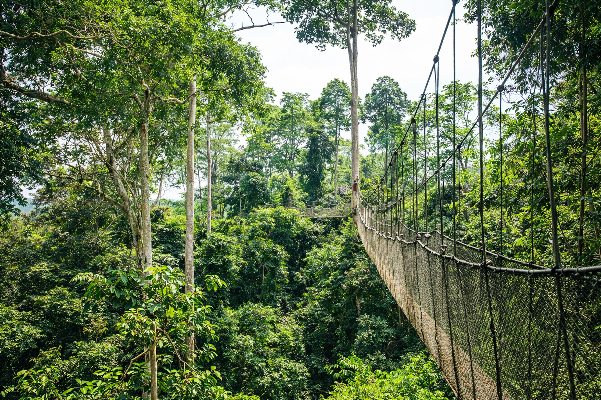

Central Region
55k
Château de Cape Coast
Forteresse historique classée à l'UNESCO, témoin de l'histoire

RetourBienvenue au cœur de l'hospitalité et de l'histoire ouest-africaine
Le Ghana est souvent cité comme la porte d'entrée de l'Afrique de l'Ouest. Premier pays d'Afrique subsaharienne à avoir accédé à l'indépendance, il brille par sa stabilité et sa richesse culturelle. Des châteaux chargés d'histoire de Cape Coast et d'Elmina, témoins de la traite transatlantique, à la majesté du royaume Ashanti à Kumasi, le Ghana offre une profondeur historique rare. Ses parcs nationaux comme Kakum et ses plages paisibles complètent ce portrait d'une nation chaleureuse, dynamique et fière.
Explorez les 15 merveilles culturelles et naturelles du Ghana
Forteresse historique classée à l'UNESCO, témoin de l'histoire

Ponts suspendus dans la canopée de la forêt tropicale

Symbole de l'indépendance et de la fierté du Ghana

Le plus ancien bâtiment européen d'Afrique subsaharienne

Les plus hautes chutes d'eau du Ghana et d'Afrique de l'Ouest

Sanctuaire des éléphants et safari à pied unique

Le siège du puissant Royaume Ashanti

Paradis du surf et détente au bord du Golfe de Guinée

L'un des plus grands lacs artificiels au monde

Refuge de fraîcheur et biodiversité sur les collines d'Akuapem

Prouesse d'ingénierie créant le Lac Volta

Site ancestral unique bâti sur le lac Tadane
Cohabitation mystique entre les hommes et les crocodiles
Falaises escarpées, grottes anciennes et faune variée
Joyau de l'architecture soudano-sahélienne (XIVe siècle)
La puissance des traditions et l'éclat du Kente.
Le Ghana est une nation où le passé et le présent cohabitent avec harmonie. Le Royaume Ashanti, avec son souverain l'Asantehene, incarne une continuité royale impressionnante. La culture ghanéenne se manifeste dans l'art des symboles Adinkra, porteurs de sagesse, et dans le tissage du Kente, ce tissu aux motifs complexes porté lors des grandes occasions. L'hospitalité ghanéenne (Akwaaba) n'est pas un vain mot, c'est un mode de vie.
Une culture royale riche en or et en traditions, centrée sur Kumasi.
Un langage visuel unique exprimant des concepts philosophiques et religieux.
Le rythme joyeux du Ghana qui a fusionné traditions locales et instruments modernes.
Le sens profond du partage et de l'accueil qui fait du Ghana une destination sereine.

Découvrez l'excellence de l'artisanat ghanéen. Du tissu Kente impérial aux perles de Krobo.
 Royal
Royal
Tissé à la main par les maîtres tisserands de Bonwire, chaque motif raconte une histoire sacrée.
 En stock
En stock
Perles de verre recyclé et peint à la main, un artisanat traditionnel du peuple Krobo.
 Unique
Unique
Réplique en bois d'ébène ou de cèdre du trône symbolique, porteur d'autorité spirituelle.
Vannerie robuste et colorée en herbe d'éléphant, originaire du nord du Ghana.
Le meilleur du cacao ghanéen transformé localement en tablettes premium.
Objet décoratif représentant le symbole "Gye Nyame" (sauf Dieu), emblème de toute-puissance.

Accra, Ministries District

Accra, Front de Mer

Accra, Centre-ville

Axim, Plage privée

Mole National Park

Akosombo, Bord du Lac
La cuisine ghanéenne est un festival de saveurs, d'épices et de générosité. Le riz et les racines (igname, manioc) en sont les piliers.
Le célèbre riz épicé à la tomate, un sujet de fierté nationale et de compétition amicale.
Pâte de manioc et plantain pilée, servie dans un bouillon épicé de viande ou poisson.
Dés de bananes plantains frites et marinées au gingembre et piment.
Ragoût de haricots à l'huile de palme rouge, servi avec des plantains frites.
Pâte de maïs et manioc fermentée, accompagnée d'un tilapia grillé et de shito.
Riz et haricots cuits ensemble avec des feuilles de sorgho pour une couleur rouge sombre.
Boule de maïs fermentée et cuite à la vapeur dans des feuilles de maïs.
La célèbre sauce noire épicée à base de poisson séché, gingembre et piment.
Spécialité du Nord : pâte de maïs légère servie avec une sauce verte de feuilles.
Igname ou plantain bouilli servi avec un ragoût de jardin potager (Kontomire).
Boulettes de riz onctueuses, généralement servies avec une soupe de cacahuètes.
Soupe saine et savoureuse à base de feuilles de taro, riche en fer.
Le Ghana vibre toute l'année au rythme de ses festivals colorés et de ses célébrations de l'héritage.
Grand festival biennal célébrant les liens entre l'Afrique et sa diaspora (Cape Coast).
Célébration royale bimensuelle du Royaume Ashanti au palais Manhyia (Kumasi).
Festival d'art de rue vibrant et alternatif dans le quartier historique de Jamestown (Accra).
La période idéale pour voyager. Le temps est ensoleillé et les routes vers les parcs nationaux sont parfaitement praticables.
Malgré quelques pluies, c'est le moment où se déroulent les plus grands festivals culturels à travers le pays.
Le Ghana est l'un des pays les plus sûrs d'Afrique. La petite délinquance existe à Accra, restez vigilant la nuit.
Vaccin fièvre jaune obligatoire. Traitement antipaludéen conseillé. Buvez exclusivement de l'eau en bouteille ou filtrée.
Demandez toujours la permission avant de prendre des gens en photo. Interdiction de photographier les sites militaires et gouvernementaux.
Cedi Ghanéen (GHS). Les distributeurs sont nombreux en ville. Prévoyez du liquide pour les marchés et les zones rurales.
Expert Histoire & Châteaux
Kwame est un historien passionné qui vous fera revivre l'époque des forts et la marche vers l'indépendance.
Guide Culturelle Ashanti
Originaire de Kumasi, Ama vous introduira aux mystères des symboles Adinkra et aux protocoles royaux.
Expert Nature & Safari
Spécialiste de la faune de Mole et Kakum, Kofi est un guide de terrain exceptionnel pour l'aventure sauvage.